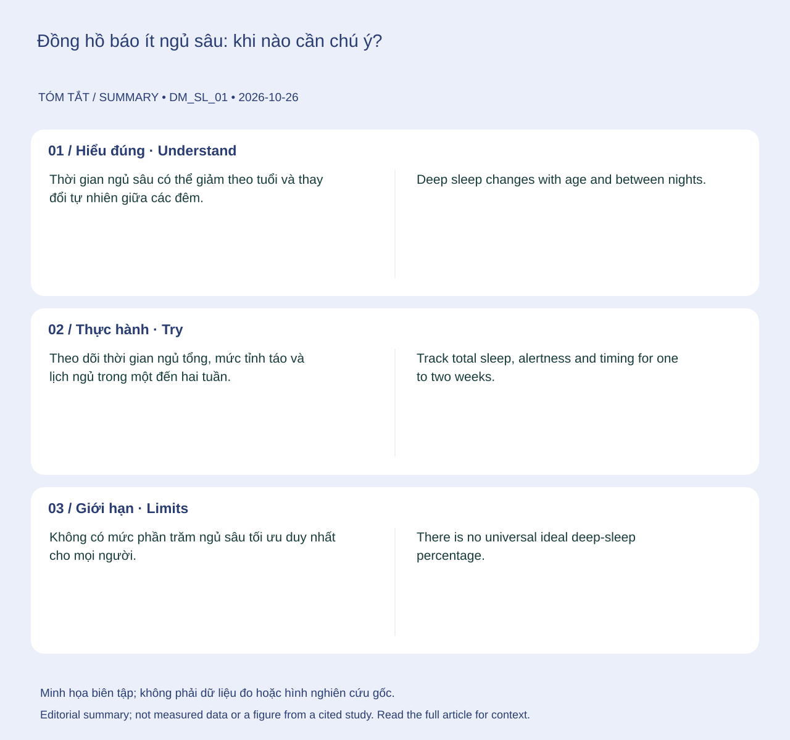

Nguồn tham khảo chính: NHLBI — Sleep Phases and Stages ↗•Màn hình App: Sleep Screen•Chỉ số: When your watch reports little deep sleep (educational topic; not a measured biomarker)
💡Điểm Cốt Lõi & Hành Động Thực Tế
Theo dõi thời gian ngủ tổng, mức tỉnh táo và lịch ngủ trong một đến hai tuần. Giữ phòng ngủ tối, yên tĩnh, thoải mái; hạn chế caffeine sát giờ ngủ và tránh dùng rượu để dễ ngủ.
Hiểu đúng
Thời gian ngủ sâu có thể giảm theo tuổi và thay đổi tự nhiên giữa các đêm. Một đêm thiết bị báo thấp có thể do sai số phân loại, giấc ngủ bị gián đoạn hoặc lịch sinh hoạt khác thường; riêng số phút này chưa xác định nguyên nhân. 123

📊 Sơ đồ tóm tắt do biên tập tạo. Không phải số liệu đo, hình giải phẫu hay hình lấy từ nghiên cứu trích dẫn.(Mở sơ đồ tóm tắt biên tập ↗)
Bạn có thể làm gì?
Theo dõi thời gian ngủ tổng, mức tỉnh táo và lịch ngủ trong một đến hai tuần. Giữ phòng ngủ tối, yên tĩnh, thoải mái; hạn chế caffeine sát giờ ngủ và tránh dùng rượu để dễ ngủ.
Giới hạn cần biết
Không có mức phần trăm ngủ sâu tối ưu duy nhất cho mọi người. Chưa có cơ sở để hứa một thực phẩm, viên bổ sung hay nhiệt độ phòng cụ thể sẽ tăng chắc chắn ngủ sâu.
Khi nào cần tư vấn?
Ngáy to, nghẹt thở lúc ngủ hoặc buồn ngủ khi lái xe cần được đánh giá. Không lái xe khi buồn ngủ.
Cập nhật nội dung và nguồn: 2026-10-26. Nội dung giáo dục; chưa có xác nhận duyệt bởi bác sĩ.
📚
Nguồn tham khảo và giới hạn bằng chứng
Nguồn chính: NHLBI — Sleep Phases and Stages. Các nguồn bổ sung và phạm vi hỗ trợ được liệt kê trong bài. Cập nhật 26/10/2026; chưa có xác nhận duyệt bởi bác sĩ.
Primary reference: NHLBI — Sleep Phases and Stages ↗•Mapped Screen: Sleep Screen•Biometric: When your watch reports little deep sleep (educational topic; not a measured biomarker)
💡Key Actionable Takeaway
Track total sleep, alertness and timing for one to two weeks. Keep the room dark, quiet and comfortable, limit late caffeine and avoid using alcohol as a sleep aid.
Understanding the topic
Deep sleep changes with age and between nights. A low watch estimate can reflect classification error, disrupted sleep or a changed routine; the number alone does not identify a cause. 123
📊 Original editorial summary. Not measured data, an anatomical diagram or a figure reproduced from a cited study.(Editorial summary artwork ↗)
What you can do
Track total sleep, alertness and timing for one to two weeks. Keep the room dark, quiet and comfortable, limit late caffeine and avoid using alcohol as a sleep aid.
What the evidence cannot tell you
There is no universal ideal deep-sleep percentage. A supplement, food or exact room temperature cannot be promised to increase it.
When to seek advice
Loud snoring, gasping or sleepiness while driving warrant assessment. Do not drive while sleepy.
NHLBI — Sleep Apnea Symptoms — Public health guidance. Supports: Snoring, breathing pauses and daytime sleepiness.
Content and sources updated: 2026-10-26. Educational content; clinical sign-off has not been recorded.
📚
References and evidence limits
Primary reference: NHLBI — Sleep Phases and Stages. Additional sources and their scope appear in the article. Updated 26 October 2026; clinical sign-off has not been recorded.